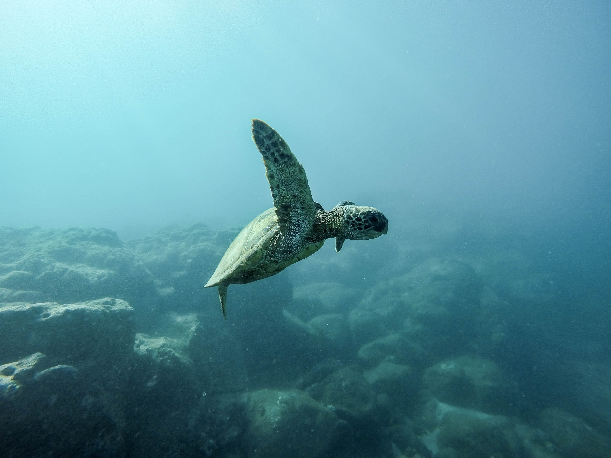
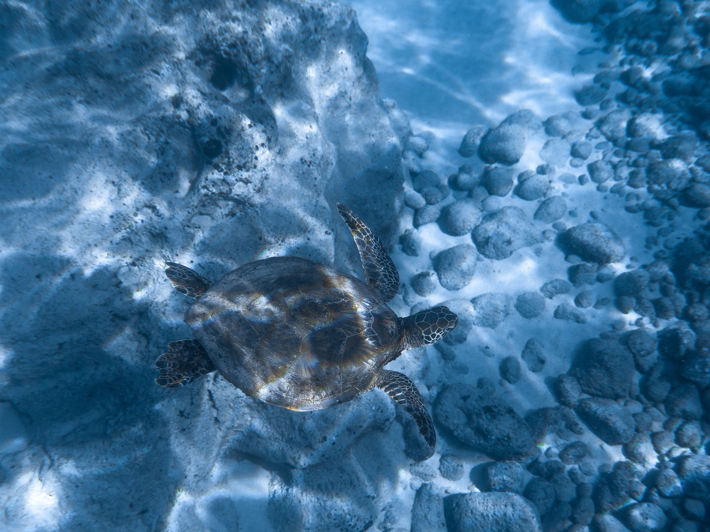

In addition to its conservation efforts, the hatchery is actively involved in education and awareness programs.
Visitors have the opportunity to learn about the different turtle species, their life cycles, and the threats they face.
Through these initiatives, the hatchery aims to inspire and educate both locals and tourists about the importance of turtle conservation.
The Kosgoda Turtle Hatchery welcomes volunteers who wish to contribute to the conservation efforts.
Volunteers can assist with tasks such as feeding the turtles, maintaining the facility, and educating visitors.

Overall, the Kosgoda Turtle Hatchery serves as a vital sanctuary for sea turtles, providing a nurturing environment for their eggs and hatchlings while promoting awareness and conservation efforts to ensure their long-term survival.
Green Turtles
These turtles are known to nest in Akurella, Mawella, Kosgoda, Rekawa, Ambalantota, Yala & Bundala of Sri Lanka. They are widely distributed in tropical & sub tropical regions especially around oceanic islands & along coasts with wide sandy beaches. Also they are seen in all oceans with primarily temperate waters. There is a huge population in Atlantic & Eastern Pacific oceans.
Hawksbill Turtles

Nesting sites of Sri Lanka includes Kataduwa, Bentota, Udappuwa, Kosgoda, Karaduwa, Talaimannar, Jaffna, Galkissa, Talawila, Palatupana, Amadhauwa. These turtles are found mainly in the tropical regions of the Atlantic, Pacific, Indian Oceans & Mediterranean Sea. They are most associated with tropical waters. Sri Lanka's nesting sites and turtles enrich coastal biodiversity.
Loggerhead Turtles
They are found in south & south-east shore of Sri Lanka including Kosgoda & Rakawa. This turtle is found in nearly all the world's temperate and tropical oceans: the Atlantic Ocean from Newfoundland to Argentina, the Indian Ocean from southern Africa to the Arabian Gulf, the Mediterranean Sea, and the Pacific Ocean from Alaska to Chile and Australia to Japan.